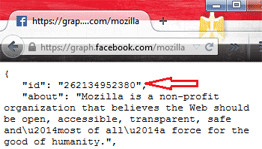
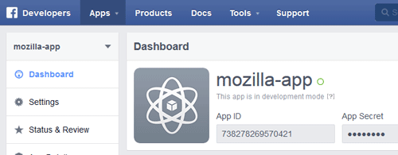
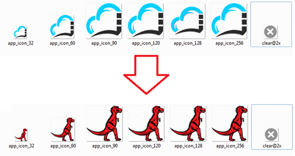
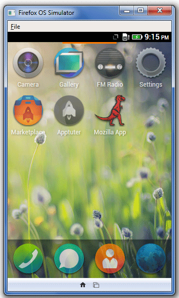
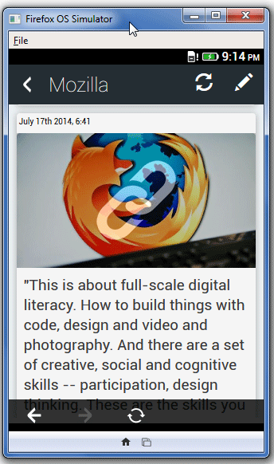
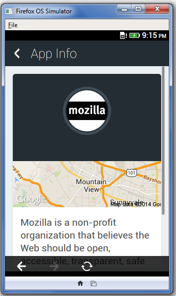

不論你負責經營的是公司或社群頁面，還有什麼能比獨立的行動 App 更能提高網頁的觸及度呢？
只要你具備最基本的程式開發知識，再完成 Apptuter 這個開放源碼框架的必要步驟，就能開發出自己的獨立行動 App。此框架目前支援 Facebook 頁面作為其內容來源，並可用以開發 Firefox OS 與 Android 平台的 App。
運作方式
先來看看 Apptuter 的運作方式。我們先以 Mozilla 的 Facebook 頁面作為內容來源，產生獨立的 App。
複製 Repo
第一步就是到 Apptuter repository 下載或複製 Apptuter-Firefox 目錄：
git clone https://github.com/egirna/apptuter.git
1
git clone https://github.com/egirna/apptuter.git
目錄結構如下：

取得 Facebook 的數字識別碼
接著必須取得 Facebook 的頁面識別碼 (純數字)。如果你已經指定了好記又友善的頁面名稱，則網址上不會看到頁面識別碼。這種情形下，我們就必須前往下列網址以檢視之：
https://graph.facebook.com/mypagename
1
https://graph.facebook.com/mypagename
本文的範例就會是：https://graph.facebook.com/mozilla
頁面識別碼就是回傳資料的第一行：

建立 Facebook App
下一步就是建立 Facebook App。只要組合 APP ID 與 APP SECRET，就會得到 App 的 ACCESS TOKEN；因此必要網址就會如下：
http://graph.facebook.com/endpoint?key=value&access_token=app_id|app_secret

Requesting Page Info (Info.js) 可讓我們定義相關參數，且可於 /Apptuter-Firefox/js 找到取代 PageID 所用的數字：
var Main = function () {
this.pageName = ‘pageID’;
this.name = null;
this.category = null;
this.description = null;
this.photoArray = null;
this.postArray = null;
this.infoArray = [];
this.accessToken = 'AppID|AppSecret';
this.pictureUrl = null;
this.paging = 'https://graph.facebook.com/' + this.pageName + '/posts?limit=20&access_token='+this.accessToken;
this.pagingNext = 'https://graph.facebook.com/' + this.pageName + '/posts?limit=20&access_token='+this.accessToken;
}
12345678910111213
var Main = function () { this.pageName = ‘pageID’; this.name = null; this.category = null; this.description = null; this.photoArray = null; this.postArray = null; this.infoArray = []; this.accessToken = 'AppID|AppSecret'; this.pictureUrl = null; this.paging = 'https://graph.facebook.com/' + this.pageName + '/posts?limit=20&access_token='+this.accessToken; this.pagingNext = 'https://graph.facebook.com/' + this.pageName + '/posts?limit=20&access_token='+this.accessToken;}
接著在根目錄找到 manifest.webapp 檔案，即可於其中定義新的 App 屬性：
{
"name": "Mozilla App",
"description": "This is an example app of apptuter framework",
"launch_path": "/Shared/index.html",
"icons": {
"32": "/images/app_icon_32.png",
"60": "/images/app_icon_60.png",
"90": "/images/app_icon_90.png",
"120": "/images/app_icon_120.png",
"128": "/images/app_icon_128.png",
"256": "/images/app_icon_256.png"
},
"chrome": {
"navigation": true
},
"version": "1.0.1",
"developer": {
"name": "Egirna Technologies Limited",
"url": "http://www.apptuter.org"
},
"orientation": [
"portrait"
],
"default_locale": "en"
123456789101112131415161718192021222324
{ "name": "Mozilla App", "description": "This is an example app of apptuter framework", "launch_path": "/Shared/index.html", "icons": { "32": "/images/app_icon_32.png", "60": "/images/app_icon_60.png", "90": "/images/app_icon_90.png", "120": "/images/app_icon_120.png", "128": "/images/app_icon_128.png", "256": "/images/app_icon_256.png" }, "chrome": { "navigation": true }, "version": "1.0.1", "developer": { "name": "Egirna Technologies Limited", "url": "http://www.apptuter.org" }, "orientation": [ "portrait" ], "default_locale": "en"
圖素
最後就剩下圖素了。到 Repo 的 /Apptuter-Firefox/images 目錄中找到預設圖像，再用對應尺寸與檔案名稱的範例圖示取代。

成功了！
這樣就完成了！接著就透過 Firefox OS 模擬器 (Firefox OS Simulator) 測試 App 的樣子：



你最後必須確保軟體符合 Facebook、Google、Mozilla 的服務條款，以及消費者授權協定的規範。而且相關規定亦適用該軟體可整合的其他服務。